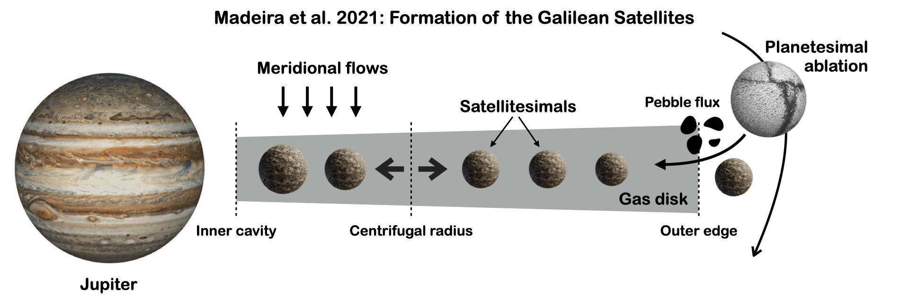

A schematic view of my work
Formation of the Galilean satellites

Formation environment of Galilean satellites (Madeira et al., 2021): The circumplanetary disk around Jupiter has an inner edge formed by the effect of the Jovian magnetic field. Material spreads viscously inwards within the centrifugal radius and outwards beyond this limit. Gas material from the circumstellar disk is deposited within the centrifugal radius due to meridional flows, while the ablation of planetesimals by Jupiter leads to the formation of a population of satellitesimals and a flux of pebbles in the disk. The satellites grow via mutual collisions and pebble accretion, ultimately forming the Galilean satellites.